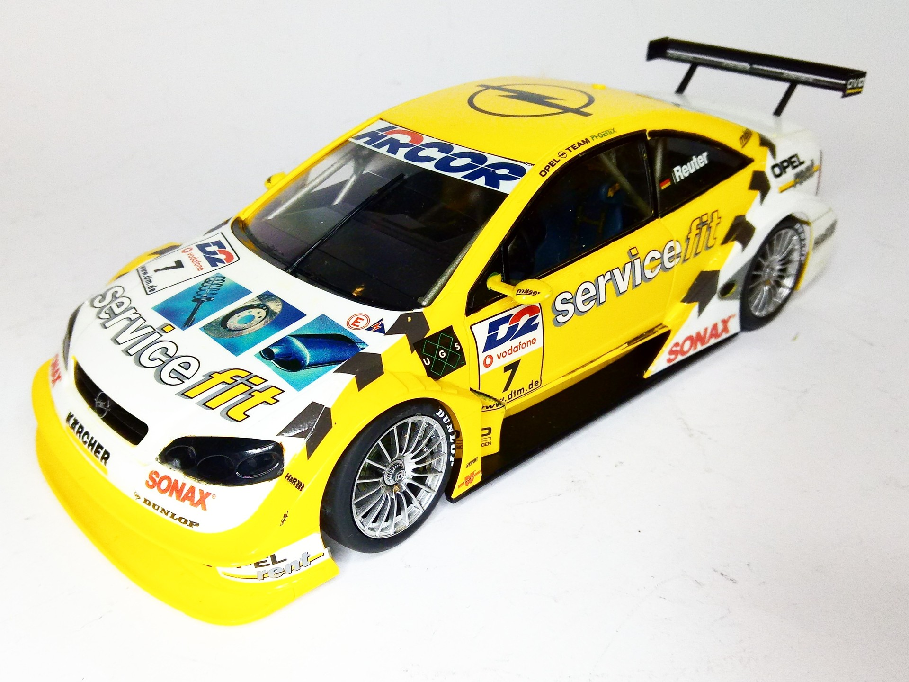
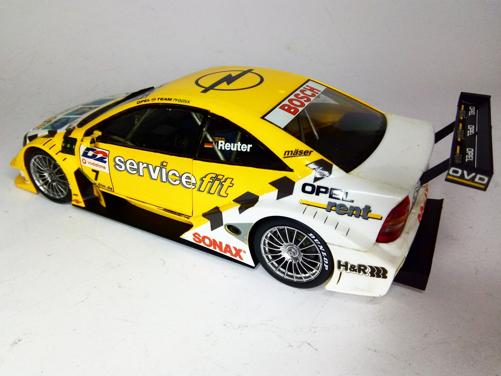
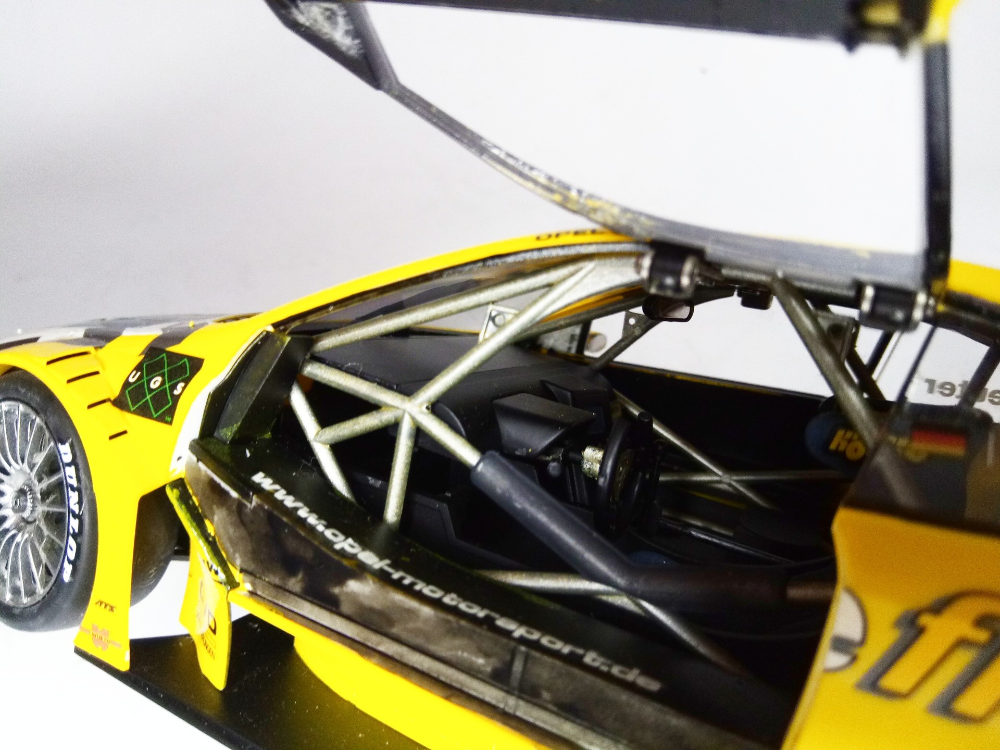

Auto e veicoli stradali · scale model archive
Opel Astra V8 Coupe
Opel Astra V8 Coupe — Kit: Tamiya, Scale: 1/24. Drover Manuel Reuter The working gull wing doors of the motel are amazing #1724 #Tamiya #Opel #Astra #DTM

Photo gallery


English description
Drover Manuel Reuter
The working gull wing doors of the motel are amazing
#1724 #Tamiya #Opel #Astra #DTM
Descrizione italiana
Pilota Manuel Reuter. Le portiere ad ala di gabbiano funzionanti del modello sono notevoli.